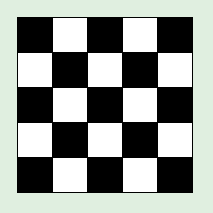
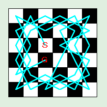
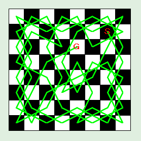
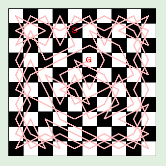
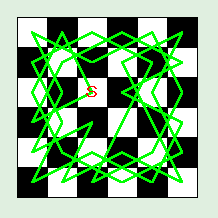

今回は騎士（ナイト）を使ったパズル 騎士の巡歴 (Knight's Tour) を取り上げます。ナイトはチェスの駒のひとつで将棋の桂馬の動きを前後左右にとることができます。次の図を見てください。
┌─┬─┬─┬─┬─┐
│ │●│ │●│ │
├─┼─┼─┼─┼─┤ ┌─┬─┬─┐
│●│ │ │ │●│ │Ｋ│ │ │
├─┼─┼─┼─┼─┤ ├─┼─┼─┤
│ │ │Ｋ│ │ │ │ │ │ │
├─┼─┼─┼─┼─┤ ├─┼─┼─┤
│●│ │ │ │●│ │ │ │ │
├─┼─┼─┼─┼─┤ ├─┼─┼─┤
│ │●│ │●│ │ │ │ │ │
└─┴─┴─┴─┴─┘ └─┴─┴─┘
●：ナイト (K) が動ける位置 問題
図：ナイトの巡歴
このナイトを動かして、N 行 M 列の盤面のどのマスにもちょうど一回ずつ訪れるような経路を求めるのが問題です。ちなみに、3 行 3 列、4 行 4 列の盤面には解がありませんが、5 行 5 列の盤面には解があります。大きな盤面を解くのは大変なので、3 行 4 列の盤面でナイトの移動経路を求めてください。プログラムを作る前に自分で考えてみるのも面白いでしょう。
今回は Perl でプログラムを作ります。次の図を見てください。
┌─┬─┬─┐
│０│１│２│ ０──７──２
├─┼─┼─┤ │ │
│３│４│５│ ５──10──３
├─┼─┼─┤ │ │
│６│７│８│ ６──１──８
├─┼─┼─┤ │ │
│９│10│11│ 11──４──９
└─┴─┴─┘
（Ａ）盤面 （Ｂ）騎士の移動
図：盤面と騎士の移動
図（Ａ）のように、3 行 4 列盤の各マスに番号をつけて表します。すると、ナイトの移動は（Ｂ）のようにグラフで表すことができます。これならばコンピュータを使わなくても解くことができますね。プログラムも隣接リストを定義すれば簡単です。次のリストを見てください。
リスト：隣接リストの定義 # 隣接リスト @adjacent = ( [5, 7], # 0 [6, 8], # 1 [3, 7], # 2 [2, 8, 10], # 3 [9, 11], # 4 [0, 6, 10], # 5 [1, 5, 11], # 6 [0, 2], # 7 [1, 3, 9], # 8 [4, 8], # 9 [3, 5], # 10 [4, 6], # 11 );
リスト：騎士の巡歴
@path = (); # 経路
@visited = (); # 訪れたマスには 1 をセット
# 探索
sub search {
my ($n, $pos) = @_;
$path[$n] = $pos;
$visited[$pos] = 1;
if( $n == 11 ){
print "@path\n";
} else {
foreach $i ( @{$adjacent[$pos]} ){
&search( $n + 1, $i ) if !$visited[$i];
}
}
$visited[$pos] = 0;
}
隣接リストは配列 @adjacent に定義します。騎士が訪れたマスには配列 @visited に印をつけておきます。そして、経路の順番を配列 @path に記憶しておきます。
あとは単純な深さ優先探索で解を見つけます。関数 search() の引数 $n が手数で、$pos が現在いるマスを表します。まず $visited[pos] に 1 をセットして印をつけ、$path[$n] に現在位置を記憶します。すべてのマスを訪問すると $n が 11 になるので、見つけた経路 @path を表示します。そうでなければ、隣接リスト @adjacent から次のマス $i を選んで騎士を移動します。このとき、$visited[$i] に印がついていないことを確認してから search() を再帰呼び出しします。
これでプログラムは完成です。さっそく実行してみましょう。
# 実行する &search( 0, 0 );
0 7 2 3 10 5 6 1 8 9 4 11 0 7 2 3 10 5 6 11 4 9 8 1
2 通りの経路を見つけることができました。このプログラムでは隣接リストを使いましたが、盤面を 2 次元配列で表しても簡単にプログラムできます。
それでは盤面を 2 次元配列で表してみましょう。この場合、騎士の移動手順は 3 行 4 列の盤面に記録したほうが簡単です。騎士が訪れていないマスを 0 とし、騎士の移動手順を 1 から始めれば、移動できるマスの判定を簡単に行うことができます。また、経路の出力も盤面を表示した方が直感的でわかりやすいかもしれません。
次は盤面の構成を考えましょう。単純な 3 行 4 列の 2 次元配列にすると、騎士が盤面から飛び出さないようにするため座標の範囲チェックが必要になります。このような場合、盤面の外側に壁を設定するとプログラムが簡単になります。下図を見てください。
┌─┬─┬─┬─┬─┬─┬─┐
│Ｗ│Ｗ│Ｗ│Ｗ│Ｗ│Ｗ│Ｗ│
├─┼─┼─┼─┼─┼─┼─┤
│Ｗ│Ｗ│Ｗ│Ｗ│Ｗ│Ｗ│Ｗ│
├─┼─┼─┼─┼─┼─┼─┤
│Ｗ│Ｗ│Ｋ│ │ │Ｗ│Ｗ│
├─┼─┼─┼─┼─┼─┼─┤
│Ｗ│Ｗ│ │ │ │Ｗ│Ｗ│
├─┼─┼─┼─┼─┼─┼─┤
│Ｗ│Ｗ│ │ │ │Ｗ│Ｗ│
├─┼─┼─┼─┼─┼─┼─┤
│Ｗ│Ｗ│ │ │ │Ｗ│Ｗ│
├─┼─┼─┼─┼─┼─┼─┤
│Ｗ│Ｗ│Ｗ│Ｗ│Ｗ│Ｗ│Ｗ│
├─┼─┼─┼─┼─┼─┼─┤
│Ｗ│Ｗ│Ｗ│Ｗ│Ｗ│Ｗ│Ｗ│
└─┴─┴─┴─┴─┴─┴─┘
Ｋ：ナイト, Ｗ：壁
図：盤面の構成
騎士は最大で 2 マス移動するので、壁の厚さも 2 マス用意します。したがって、盤面を表す配列は 7 行 8 列の大きさになります。壁に 0 以外の値 (1) を設定しておけば、騎士が盤面から飛び出して壁の位置に移動しようとしても、盤面の値が 0 ではないので実際に移動することはできません。これで騎士を移動したときの範囲チェックを省略することができます。
それではプログラムを作りましょう。最初にグローバル変数を定義します。
リスト：グローバルの定義 # 騎士の移動 @dx = ( 1, 2, 2, 1, -1, -2, -2, -1); @dy = (-2, -1, 1, 2, 2, 1, -1, -2); # 盤面 @board = ( [1,1,1,1,1,1,1], [1,1,1,1,1,1,1], [1,1,0,0,0,1,1], [1,1,0,0,0,1,1], [1,1,0,0,0,1,1], [1,1,0,0,0,1,1], [1,1,1,1,1,1,1], [1,1,1,1,1,1,1], );
配列 @dx は騎士の x 方向の変位、配列 @dy は y 方向の変位を表します。現在の座標にこの値を加えることで、次の座標を決定します。配列 @board は盤面を表します。盤面は 2 次元配列で表すので、@board には無名の配列をセットします。壁の部分は 1 に、実際の盤面は 0 に初期化しておきます。
次は探索を行う関数 search を作ります。
リスト：騎士の巡歴
# 探索
sub search {
my ($n, $x, $y) = @_;
if( !$board[$x][$y] ){
$board[$x][$y] = $n;
if( $n == 12 ){
&print_board();
} else {
my $i;
for( $i = 0; $i < 8; $i++ ){
&search( $n + 1, $x + $dx[$i], $y + $dy[$i] );
}
}
$board[$x][$y] = 0;
}
}
関数 search は引数として手数 $n と騎士の座標 $x, $y を受け取ります。まず、与えられた座標に移動できるかチェックします。これは $board[$x][$y] が 0 であることを確かめればいいですね。次に、その位置に手数 $n を書き込みます。$n が 12であれば騎士はすべてのマスを訪れたので、print_board で盤面を出力します。
そうでなければ、次に移動するマスを選びます。for 文で @dx と @dy の要素を取り出して $x と $y の値に加え、search を再帰呼び出しします。それから、@board はグローバル変数なので、search を終了するときには $board[$x][$y] の値を 0 に戻すことをお忘れなく。print_board は壁を除いた盤面を出力するだけなので説明は不要でしょう。リストをお読みくださいませ。
リスト：盤面の表示
sub print_board {
my ($x, $y);
for( $y = 2; $y < 6; $y++ ){
for( $x = 2; $x < 5; $x++ ){
printf("%2d ", $board[$y][$x]);
}
print "\n";
}
print "\n";
}
これでプログラムは完成です。さっそく実行してみましょう。
スタート位置は左上隅 (2, 2) です。# 実行 &search( 1, 2, 2 );
1 12 3 4 9 6 7 2 11 10 5 8 1 8 3 4 11 6 7 2 9 10 5 12
3 行 4 列盤は 2 通りの解しかありませんが、5 行 5 列盤になると重複解を含めて全部で 304 通りあります。
ところで、騎士の巡歴は「どのマスにもちょうど一回ずつ訪れたのち最初のマスに戻ってくること」を条件にする場合があります。これを 騎士の周遊 と呼びます。今回は「騎士の周遊」について取り上げます。
「騎士の周遊」の場合、3 行 4 列盤や 5 行 5 列盤には解がありません。また、N 行 M 列の盤面でマスの個数が奇数の場合も、騎士は出発点に戻ることはできません。これは簡単に証明することができます。次の図を見てください。
 図：チェスの盤面
チェスの盤面は、左図に示すように白黒の市松模様に塗り分けられています。すると、騎士は白のマスにいるときは黒のマスに、黒のマスにいるときは白のマスにしか移動できません。このため、騎士は白と黒のマスを交互に移動することになります。
左図の 5 行 5 列盤の場合、黒マスが 13 個で白マスが 12 個あります。黒マスから出発した場合、騎士は黒白交互に移動していくので、最後に騎士が到達するマスは黒になります。次に騎士が移動できる場所は白マスですが、出発点は黒マスですよね。したがって、最後のマスから出発点に戻ることは不可能であることがわかります。
では、白マスから出発した場合はどうなるのでしょう。この場合、騎士は白黒交互に移動していくので、12 番目の白マスから 12 番目の黒マスへ移動したあと、13 番目の黒マスがひとつ余ることになります。つまり、白マスから出発すると「騎士の巡歴」は解けないのです。
以上のことから、騎士が出発点に戻るには、白と黒のマスが同数必要であることがわかります。マスの個数が奇数の場合、白と黒のマスは同数ではないので騎士が出発点に戻ることは不可能、というわけです。
「騎士の巡歴」を解くには、基本的にはすべての跳び方を試してみるしか方法がないように思われます。小さな盤面であれば単純なバックトラックで簡単に解くことができますが、大きな盤面になると時間がとてもかかることになります。ところが 参考文献 [9] によると、とても単純な規則で騎士の経路を求めることができるそうです。規則の説明を参考文献 [9] (72ページ) より引用します。
ワーンスドロフの規則：あるマスに飛び移ったとき, そのマスからさらに飛び移ることのできるすべてのマスを拾い上げる. そして, それぞれのマスからさらに何個のマスに飛び移れるかを数え, 最小の飛び方しかできないマスに飛び移る。ただし, 対象となるマスが 2 個以上あれば, そのなかの任意のマスを選ぶ.
この規則は「欲張り法」と呼ばれるアルゴリズムと同じです。簡単な例ですが、お釣を払うときに硬貨の枚数を最小にする払い方は、欲張り法で求めることができます。たとえば、765 円のお釣を払う場合、500 円硬貨 1 枚、100 円硬貨 2 枚、50 円硬貨 1 枚、10 円硬貨 1 枚、5 円硬貨 1 枚の計 6 枚が硬貨の枚数を最小にする払い方です。これは、「高額の硬貨から順番に使って払う」という方法で実現できます。つまり、高い硬貨から使っていくという点で「欲張り」なわけです。
ところが、硬貨の種類が異なると、欲張り法では最適解を求めることができない場合もあります。たとえば、25 円硬貨はあるが 5 円硬貨はないとしましょう。40 円のお釣を払う場合、欲張り法では 25 円硬貨 1 枚、10 円硬貨 1 枚、1 円硬貨 5 枚の計 7 枚になりますが、10 円硬貨 4 枚の方が枚数は少なくなりますね。このように、問題の条件によっては欲張り法で最適解を求めることはできません。したがって、欲張り法を使って問題を解く場合は、それが最適解になることを証明する必要があります。
ワーンスドロフの規則の場合、騎士の跳び方がいちばん少ないマスを選ぶところが「欲張り」なわけです。実に単純でわかりやすい規則なのですが、参考文献 [9] によると、これで確実にすべてのマスを訪問できることはまだ証明されておらず、騎士巡歴に関する有名な未解決問題なのだそうです。そこで、実際にプログラムを作って、6 行 6 列盤、8 行 8 列盤、10 行 10 列盤をワーンスドロフの規則で解いてみました。その結果を示します。
 図：6 行 6 列盤
 図：8 行 8 列盤
 図：10 行 10 列盤
確かに、ワーンスドロフの規則で騎士の経路を求めることができました。8 行 8 列盤と 10 行 10 列盤は、偶然にも出発点に戻る周遊コースになっています。また、6 行 6 列盤のように周遊コースにならなくても、簡単な方法で周遊コースに変換できる場合があります。
それでは、6 行 6 列盤の経路を周遊コースに変換してみましょう。次の図を見てください。
図：6 行 6 列盤の騎士の経路 (1)
┌─┬─┬─┬─┬─┬─┐ │32│１│24│15│30│７│ ├─┼─┼─┼─┼─┼─┤ │23│14│31│８│25│16│ ├─┼─┼─┼─┼─┼─┤ │２│33│０│17│６│29│ ├─┼─┼─┼─┼─┼─┤ │13│22│35│26│９│18│ ├─┼─┼─┼─┼─┼─┤ │34│３│20│11│28│５│ ├─┼─┼─┼─┼─┼─┤ │21│12│27│４│19│10│ └─┴─┴─┴─┴─┴─┘ 図：6 行 6 列盤の騎士の経路 (2)
右の図は騎士が跳ぶ順番を表していて、スタート (0番目) から跳び移れる地点を赤で、ゴール (35番目) から跳び移れる地点を青で示しています。ここで、12 番目と 13 番目に注目してください。13 番目の位置はスタートに跳び移ることができ、12 番目からはゴールに跳び移ることができます。
ここがポイントです。騎士はスタートから 12 番目まで移動し、ここでゴール (35番目) に跳び移ることができます。そして、経路を逆順にたどっていけば、13 番目の位置に到達しスタートに戻ることができます。これで、経路を周遊コースに変換することができました。これを図に表すと次のようになります。
12 13
↓ ↓
14─１─12─25─33─29─16─５─９─22─35─27─31×18─７─３─11─15
↑ │ │ │
└───────────────────────┼─┘ │
│ │
┌───────────────────────┘ │
↓ │
20─24─13─０─８─９─17─28─32─21─10─２─６─19─30─26─34─23
図：周遊コースへの変換
また、12 番目と 13 番目だけではなく、2 番目と 3 番目または 8 番目と 9 番目でも同じように変換することができます。ところで、今回はうまく周遊コースに変換できましたが、ワーンスドロフの規則では、この方法で変換できない経路が生成される場合もあります。プログラムで周遊コースを生成する場合、変換できない経路であればバックトラックで別の経路を生成する、などの工夫が必要になるでしょう。ご注意くださいませ。
 図：6 行 6 列盤の周遊コース
#
# knight_tour.pl : 騎士の周遊（ワーンスドロフの規則：欲張り法の一種）
#
# Copyright (C) 2002 Makoto Hiroi
#
use Tk;
# ナイトの移動量
@dx = ( 1, 2, 2, 1, -1, -2, -2, -1);
@dy = (-2, -1, 1, 2, 2, 1, -1, -2);
# 隣接リスト
@neighbors = ();
# 移動できる場所の個数
@number_of_place = ();
# 座標
@postion_x = ();
@postion_y = ();
# 経路
@path = (); # 巡歴
@visited = ();
@circuit = (); # 順回路
# 盤面（順番を書き込む)
@board = ();
# ウィンドウ
$top = MainWindow->new();
# 図形の初期化
sub init_canvas {
my ($x, $y, $n);
# キャンバスの初期化
$canvas = $top->Canvas( -width => $w, -height => $w, -bg => '#E8F0E8' );
$canvas->pack();
for( $n = 0, $y = 0; $y < $size; $y++ ){
my $color = ( $y & 0x01 ? 'black' : 'white');
for( $x = 0; $x < $size; $x++ ){
my $x1 = $x * 30 + 20;
my $y1 = $y * 30 + 20;
$canvas->create('rectangle', $x1, $y1, $x1 + 30, $y1 + 30, -fill => $color );
$color = ($color eq 'black' ? 'white' : 'black');
$postion_x[$n] = $x1 + 15;
$postion_y[$n++] = $y1 + 15;
}
}
}
# 初期化
sub init {
# グローバル変数の初期化
$size = shift;
$finish = $size * $size;
$w = 30 * $size + 20 * 2;
# WORK 領域の初期化
my $board_size = $size + 4; # ナイトの移動分を考慮
my ($x, $y, $n);
my @work = ();
for( $x = 0; $x < $board_size; $x++ ){
$work[$x] = [];
for( $y = 0; $y < $board_size; $y++ ){
# 壁
$work[$x][$y] = -1;
}
}
for( $n = 0, $x = 2; $x < $size + 2; $x++ ){
for( $y = 2; $y < $size + 2; $y++ ){
# 空き（番号を振る）
$work[$x][$y] = $n++;
}
}
# 隣接リスト, 移動場所の個数を初期化
for( $x = 2; $x < $size + 2; $x++ ){
for( $y = 2; $y < $size + 2; $y++ ){
my $buff = [];
my $c = 0;
for( $n = 0; $n < 8; $n++ ){
my $m = $work[$x + $dx[$n]][$y + $dy[$n]];
if( $m != -1 ){
push( @$buff, $m );
$c++;
}
}
$neighbors[ $work[$x][$y] ] = $buff;
$number_of_place[ $work[$x][$y] ] = $c;
}
}
&init_canvas();
}
# 探索（欲張り法）
sub search {
my $k = shift;
my $n = 0;
while( 1 ){
# ナイトをセット
$visited[$k] = 1;
$board[$k] = $n;
$path[$n++] = $k;
# 終了チェック
return if $n == $finish;
# 個数を更新
foreach $m (@{$neighbors[$k]}) {
$number_of_place[$m]--;
}
# 次の場所を選択
my $c = 9;
foreach $m (@{$neighbors[$k]}){
if( !$visited[$m] and ($number_of_place[$m] < $c) ){
$c = $number_of_place[$m];
$k = $m;
}
}
if( $c == 9 ){
die "not found next postion\n";
}
}
}
# 線を引く
sub draw_line {
my $i;
$circuit[$finish] = $circuit[0];
for( $i = 1; $i <= $finish; $i++ ){
my $p1 = $circuit[$i - 1];
my $p2 = $circuit[$i];
$canvas->create('line', $postion_x[$p1], $postion_y[$p1],
$postion_x[$p2], $postion_y[$p2], -fill => 'green', -width => 2.0 );
}
$canvas->create('text', $postion_x[ $circuit[0] ], $postion_y[ $circuit[0] ],
-text => 'Ｓ', -font => 'FixedSys 16 bold', -fill => 'red' );
}
sub draw_line_path {
my $i;
for( $i = 1; $i < $finish; $i++ ){
my $p1 = $path[$i - 1];
my $p2 = $path[$i];
$canvas->create('line', $postion_x[$p1], $postion_y[$p1],
$postion_x[$p2], $postion_y[$p2], -fill => 'pink', -width => 2.0 );
}
$canvas->create('text', $postion_x[ $path[0] ], $postion_y[ $path[0] ],
-text => 'Ｓ', -font => 'FixedSys 16 bold', -fill => 'red' );
$canvas->create('text', $postion_x[ $path[$finish - 1] ], $postion_y[ $path[$finish - 1] ],
-text => 'Ｇ', -font => 'FixedSys 16 bold', -fill => 'red' );
}
# 順路の形成
sub make_circuit {
my $start = $path[0];
my $end = $path[$finish - 1];
# start と end を結べるか
foreach $p1 (@{$neighbors[$start]}) {
if( $p1 == $end ){
@circuit = @path;
return;
}
}
foreach $p1 (@{$neighbors[$start]}) {
foreach $p2 (@{$neighbors[$end]}) {
if( ($board[$p2] + 1) == $board[$p1] ){
# 付け替える位置を発見
my $i;
my $j;
for( $i = 0; $i <= $board[$p2] ; $i++ ){
$circuit[$i] = $path[$i];
}
for( $j = $finish - 1; $i < $finish; $i++, $j-- ){
$circuit[$i] = $path[$j];
}
return;
}
}
}
print "not found circuit\n";
@circuit = @path;
}
# 実行
&init( 8 ); # 盤面のサイズを指定
&search( 0 ); # ナイトのスタート位置を指定
&make_circuit();
&draw_line();
# Main Loop
MainLoop();